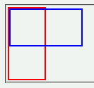
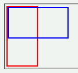

Moz1.0での表示（標準モード）
 WinIE6.0での表示（標準モード）
WinIE6.0での表示（標準モード）
本来、ボックスサイズを算出する際にはフロート化された子孫要素は除外されるが、幅や高さが指定された要素の場合はフロートを除外しない。
<div style="width:50px; height:100px; border:2px solid red;"> <div style="float:left; width:100px; height:50px; border:2px solid blue;"></div> </div>
青いボーダーのボックスはフロート配置です。
Moz1.0での表示（標準モード）
WinIE6.0での表示（標準モード）
WinIE6.0では標準・互換モードともに不具合の発生が確認されました。